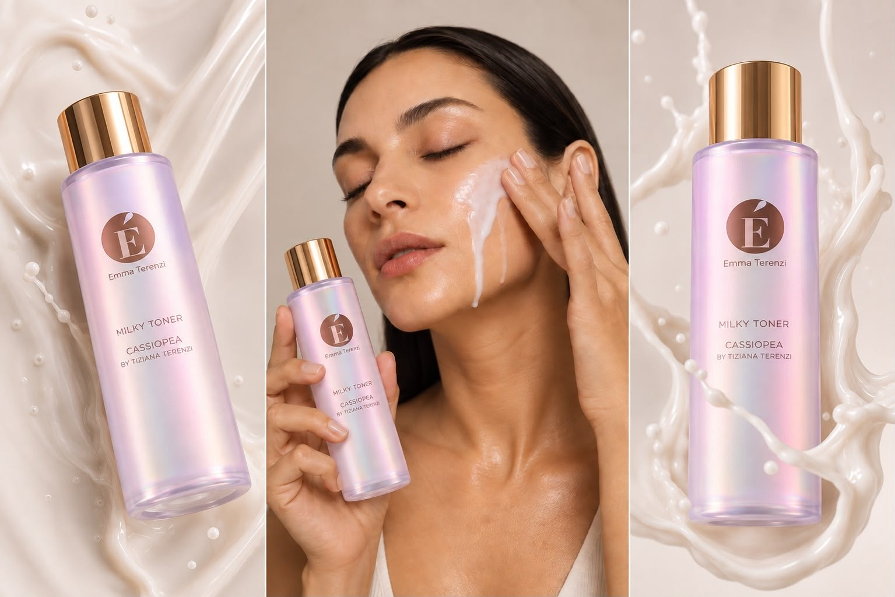
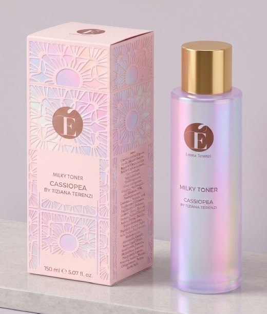
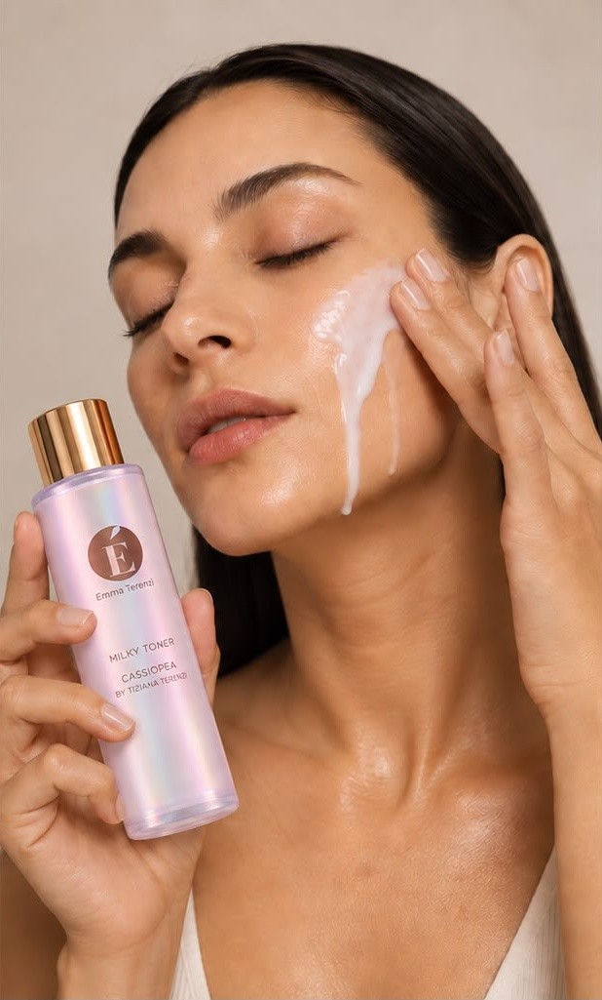
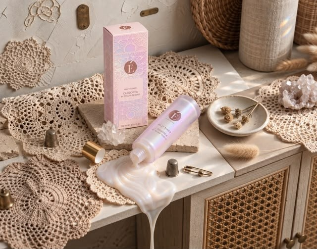
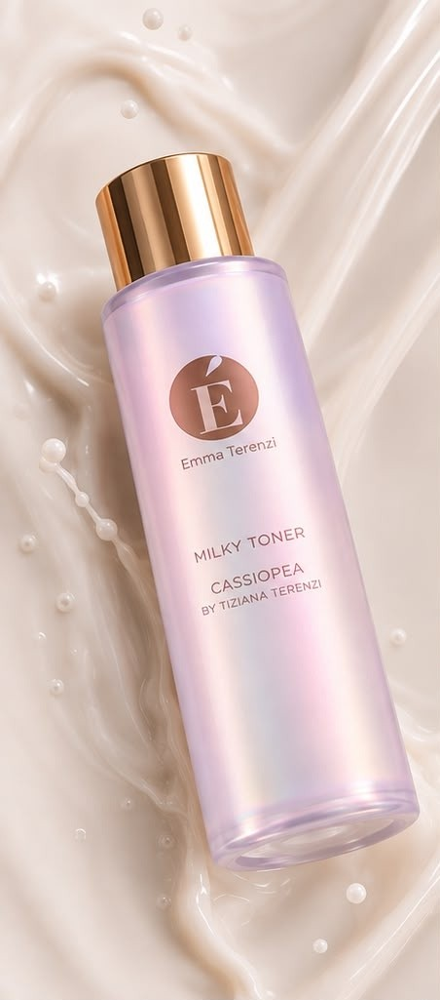
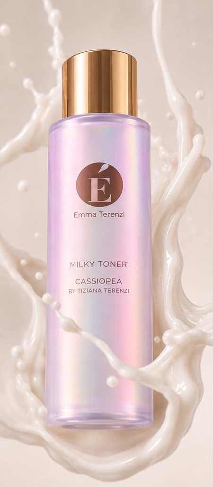

01
Hyaluronic Acid
Three molecular weights draw water from the surface to the deeper layers. Skin plumps, and dehydration lines soften.
hydrates
New · Cassiopea Edition · MMXXVI
A hydrating milky toner for dry and sensitive skin.
Cassiopea fragrance by Tiziana Terenzi.
— the manifesto
“Let me introduce the new EmmaT creation: the Hydrating Milky Toner, for dry and sensitive skin.
With hyaluronic acid, centella asiatica, probiotics and a trio of ceramides.
Scented with Cassiopea, by Tiziana Terenzi.
Stellar hydration.”

— the product
Hydrating Milky Toner · 150 ml
A formula as enveloping as a cloud of milk. The hydrating toner that brightens dry and sensitive skin, seals in a veil of moisture and readies it for your routine, like a sky easing into evening.
— active constellation
Every ingredient is a light: one hydrates, one repairs, one protects, one strengthens the barrier. Together, a constellation.
Three molecular weights draw water from the surface to the deeper layers. Skin plumps, and dehydration lines soften.
hydratesTiger grass, soothing and regenerating. It calms redness, stimulates microcirculation and mends the veil of stressed skin.
soothesLactic strains stabilise the skin's microbiome: balance, defence, radiance — the skin rediscovers its own ecology.
balancesCeramides NP, AP and EOP rebuild the lipid barrier like three golden beams. Skin holds on to moisture, breathes, glows.
strengthens*Consumer test, panel of 32 women with dry skin, self-assessment after 7 days of morning and evening application.

— the ritual
Cleanse your face with your cleansing milk, then pat dry.
Pour a few drops of Cassiopea onto your fingertips and pat from the centre outwards.
Let it sink in for a moment, then seal with your favourite serum or cream.
— suggested pairing
Wear a few drops of Cassiopea by Tiziana Terenzi on your wrists: skin and scent mirror one another.
— maison emma t
Emma T. was born in Milan from a simple idea: skincare as ritual, ritual as time for oneself. No loud claims, no impossible promises. Only essential, sensorial formulas, scented the way a room you love coming back to is scented.
Cassiopea is the first edition of a line that borrows its guiding image from astronomy: a small cluster of stars, a W traced across the northern sky, and the thought that care is made of constancy more than intensity.

— editorial
A series of still lifes, portraits and details — photographed beneath the Roman sun and in Milan's evening light.


— questions
For dry, sensitive and reactive skin — even the most temperamental. The formula is free from alcohol, silicones, mineral oils and harsh synthetic fragrances.
Morning and evening, after cleansing and before your serum. Skin absorbs it in seconds.
Yes, the formulation is safe during pregnancy and breastfeeding. To be extra cautious, we recommend consulting your doctor about any cosmetic.
It is a fragrance inspired by Cassiopea, developed in collaboration with the maison. The same olfactory register: powdery, incense, golden amber.
Free delivery within the EU on orders over €60. Returns within 30 days if sealed.